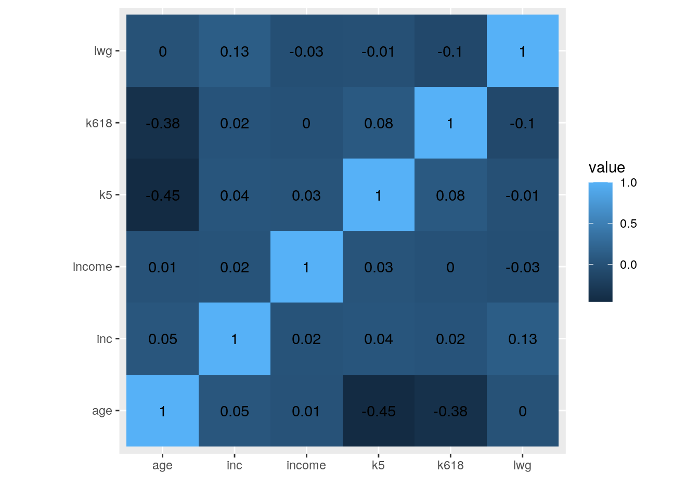
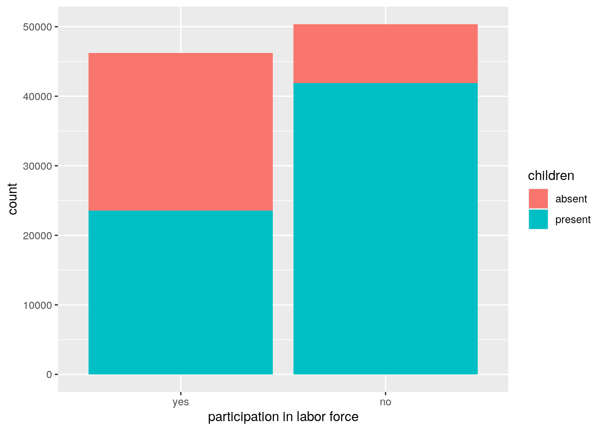
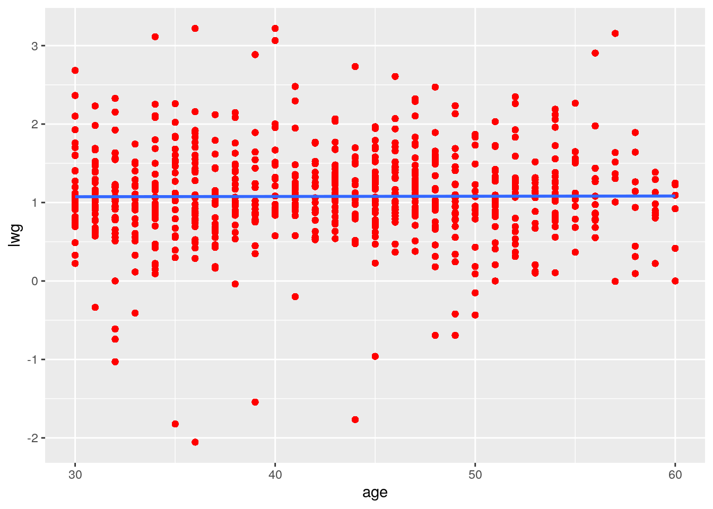
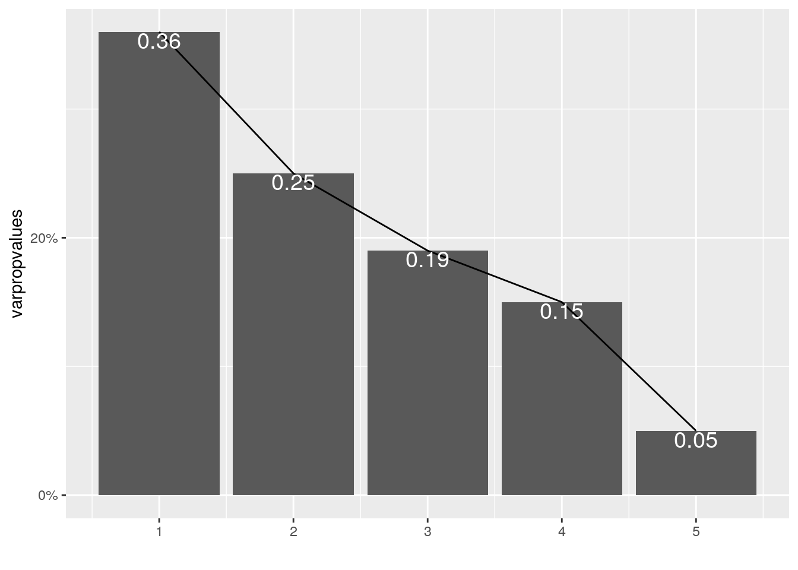
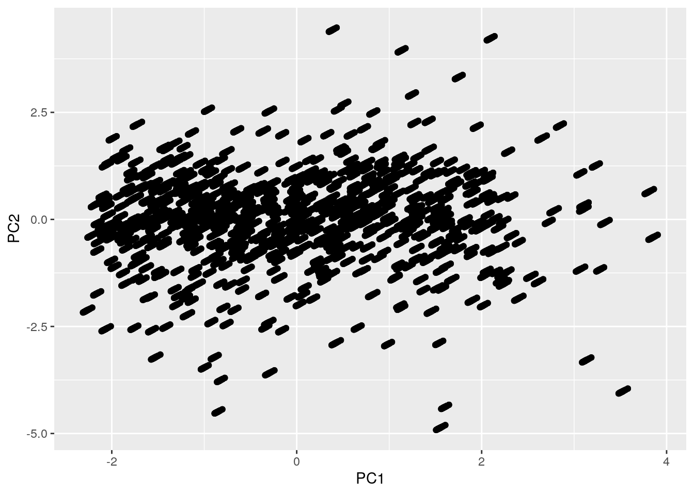

Introduction: The two data I have chosen both deal with women participating in the labor force from carData. I thought this would be interesting to see the factors that impact women's participation in labor force. I expect that not having children would increase the rate of labor force participation, and an increased participation when husband's income is lower.
The Mroz data frame has 753 rows and 8 columns, and the observations, from the Panel Study of Income Dynamics, are married women. This data includes whether or not women participated in the labor force, their age, the number of children they have, their income, their college attendace, their husband's income,and the log expected wage rate. The Womenlf data frame has 263 rows and 4 columns, and the data are from a 1977 survey of the Canadian population. This data contained whether women participated in the labor force or not, the income of the women, whether they have children or not, and the region in Canada.
library(tidyverse)
library(dplyr)
library(carData)
head(Mroz)## lfp k5 k618 age wc hc lwg inc
## 1 yes 1 0 32 no no 1.2101647 10.910
## 2 yes 0 2 30 no no 0.3285041 19.500
## 3 yes 1 3 35 no no 1.5141279 12.040
## 4 yes 0 3 34 no no 0.0921151 6.800
## 5 yes 1 2 31 yes no 1.5242802 20.100
## 6 yes 0 0 54 no no 1.5564855 9.859head(Womenlf)## partic hincome children region
## 1 not.work 15 present Ontario
## 2 not.work 13 present Ontario
## 3 not.work 45 present Ontario
## 4 not.work 23 present Ontario
## 5 not.work 19 present Ontario
## 6 not.work 7 present OntarioWomenlf <- Womenlf %>% rename(c(income = "hincome", particip = "partic"))
Mroz <- Mroz %>% rename(c(particip = "lfp"))
Womenlf <- Womenlf %>% mutate(particip = recode(particip, not.work = "no",
fulltime = "yes", parttime = "yes"))
joindata <- left_join(Womenlf, Mroz)I chose this join because both datasets had participation and income columns, and I wanted the join based on participation because the participation is non-numeric, and I thought it would be easier to visualize and look more organized. I used left_join because it is the most common one to use to this type of joins. It includes all rows in Mroz and Womenlf, and they are joined by participation and income. I chose Mroz data to be added to Womenlf data because Womenlf has more numerical variables.
joindata %>% na.omit %>% filter(children == "present") %>% arrange(income) %>%
head## particip income children region k5 k618 age wc hc lwg inc
## 1 no 1 present Atlantic 0 1 49 no yes 0.8689480 21.025
## 2 no 1 present Atlantic 2 0 30 yes yes 1.4018365 23.600
## 3 no 1 present Atlantic 1 0 30 no yes 1.1174339 22.800
## 4 no 1 present Atlantic 0 4 41 no yes 0.8318294 35.910
## 5 no 1 present Atlantic 0 1 45 no yes 1.1690733 21.700
## 6 no 1 present Atlantic 0 5 43 no yes 0.9426970 21.823joindata %>% na.omit %>% select(particip, income) %>% arrange(desc(income)) %>%
head## particip income
## 1 no 45
## 2 no 45
## 3 no 45
## 4 no 45
## 5 no 45
## 6 no 45joindata %>% filter(children == "absent") %>% summarize(mean(income)) %>%
head## mean(income)
## 1 14.17752joindata %>% filter(children == "present") %>% summarize(mean(income)) %>%
head## mean(income)
## 1 14.83113joindata %>% na.omit %>% summarize(sd(income))## sd(income)
## 1 7.214666joindata %>% na.omit %>% summarize(mean(k5))## mean(k5)
## 1 0.2580254joindata %>% na.omit %>% summarize(min(k618))## min(k618)
## 1 0joindata %>% na.omit %>% summarize(max(age))## max(age)
## 1 60joindata %>% na.omit %>% summarize(n_distinct(lwg))## n_distinct(lwg)
## 1 676joindata %>% na.omit %>% group_by(particip) %>% summarize(mean(income))## # A tibble: 2 x 2
## particip `mean(income)`
## <fct> <dbl>
## 1 yes 13.6
## 2 no 15.6joindata %>% na.omit %>% group_by(region, particip) %>% summarize(sd(k5))## # A tibble: 10 x 3
## # Groups: region [5]
## region particip `sd(k5)`
## <fct> <fct> <dbl>
## 1 Atlantic yes 0.392
## 2 Atlantic no 0.636
## 3 BC yes 0.391
## 4 BC no 0.636
## 5 Ontario yes 0.391
## 6 Ontario no 0.636
## 7 Prairie yes 0.391
## 8 Prairie no 0.636
## 9 Quebec yes 0.391
## 10 Quebec no 0.636joindata %>% na.omit %>% group_by(children) %>% summarize(max(k618))## # A tibble: 2 x 2
## children `max(k618)`
## <fct> <int>
## 1 absent 8
## 2 present 8joindata %>% na.omit %>% group_by(particip) %>% summarize(n_distinct(age))## # A tibble: 2 x 2
## particip `n_distinct(age)`
## <fct> <int>
## 1 yes 31
## 2 no 31joindata %>% na.omit %>% group_by(region) %>% summarize(max(lwg))## # A tibble: 5 x 2
## region `max(lwg)`
## <fct> <dbl>
## 1 Atlantic 3.22
## 2 BC 3.22
## 3 Ontario 3.22
## 4 Prairie 3.22
## 5 Quebec 3.22I omited the NAs to anazlyze the data. I grabbed women with children and arranged their income, and I was surprised by the fact that women with lower income both participated in labor force and had children. Also, I selected two columns, participation and income, and arranged that by descending income and found that the highest income belong to women who participated in labor force. Then, I filtered women with children and without children and summarized the mean income of both, which showed that women with children had higher income. The standard deviation of income was 5.28. Then, I grouped by participation, and the mean of the income was 15.41. The mean of having kids under 5 years old was 0.33, meaning that most women who participated in the survey did not have kids under 5 years old. Then, I grouped by region and participation, and the standard deviation of k5 was 0.67. The minimum amount of having kids between 6 years old and 18 years old was 0. Then, I grouped by children, and the max number of k618 was 4.The maximum age of the women was 60. Then I grouped by participation, and the distinct rows of age was 28. The number of distinct rows of log expected wage rate was 50. Then I grouped by region, and the maximum lgw was 2.28.
joindata_onlynum <- joindata %>% na.omit %>% select_if(is.numeric)
eigen(cor(joindata_onlynum))## eigen() decomposition
## $values
## [1] 1.6435470 1.1367966 1.0102421 0.9384704 0.8420435 0.4289004
##
## $vectors
## [,1] [,2] [,3] [,4] [,5] [,6]
## [1,] -0.01636535 -0.01874755 0.96712962 -0.08621389 0.2358746 -0.03116626
## [2,] -0.54287479 0.21469938 0.07642900 -0.44598206 -0.4281861 0.52067879
## [3,] -0.48821383 -0.14325909 -0.04463483 0.61574125 0.4194907 0.42897793
## [4,] 0.67618793 -0.04739311 0.07065007 0.10870165 -0.1123375 0.71491019
## [5,] 0.09559223 0.69961636 -0.15776307 -0.27504216 0.6232744 0.11131366
## [6,] 0.01727447 0.66431949 0.16415242 0.57189653 -0.4289017 -0.14287366I used eigen and cor to analyze the correlation between the numeric variables. Based on the correlation matrix, highest correlation is between age and log expected wage rate (lwg) with a value of 0.713, and there is no correlation between income and log expected wage rate with a value of 0.0098.
library(ggplot2)
joindata %>% na.omit %>% select_if(is.numeric) %>% cor %>% as.data.frame %>%
rownames_to_column %>% pivot_longer(-1) %>% ggplot(aes(rowname,
name, fill = value, stat = "summary")) + geom_tile() + geom_text(aes(label = round(value,
2))) + xlab("") + ylab("") + coord_fixed()
joindata %>% ggplot(aes(x = particip, fill = children, stat = "summary")) +
geom_bar() + xlab("participation in labor force")
joindata %>% ggplot(aes(x = age, y = lwg)) + theme(legend.position = "none") +
geom_point(color = "red") + geom_smooth(method = "lm")
The heatmap showed highest negative correlation between k5 and age with -0.53. The k618 and age was the second highest correation with -0.52. Overall, the heatmap showed that there are not much correlation between the variables. The bargraph shows the difference of presence of children in women who participate in labor force and women who do not. The graph illustrates that many surveyed women who do not participate in labor force have children, and a little over half of the women who do participate in labor force do not have children. The scatterplot shows the relationship between age and lwg, the log expected wage rate. I predicted that as age increases, the log wage rate would increase as well, and the trend line shows a very small increase.
## Princomp
joindata_nums <- joindata %>% select_if(is.numeric) %>% scale
rownames(joindata_nums) <- joindata$region
joindata_pca <- princomp(na.omit(joindata_nums), cor = TRUE)
names(joindata_pca)## [1] "sdev" "loadings" "center" "scale" "n.obs" "scores" "call"summary(joindata_pca, loadings = T)## Importance of components:
## Comp.1 Comp.2 Comp.3 Comp.4 Comp.5
## Standard deviation 1.2820090 1.0662067 1.0051080 0.9687468 0.9176293
## Proportion of Variance 0.2739245 0.1894661 0.1683737 0.1564117 0.1403406
## Cumulative Proportion 0.2739245 0.4633906 0.6317643 0.7881760 0.9285166
## Comp.6
## Standard deviation 0.6549049
## Proportion of Variance 0.0714834
## Cumulative Proportion 1.0000000
##
## Loadings:
## Comp.1 Comp.2 Comp.3 Comp.4 Comp.5 Comp.6
## income 0.967 0.236
## k5 0.543 -0.215 0.446 -0.428 -0.521
## k618 0.488 0.143 -0.616 0.419 -0.429
## age -0.676 -0.109 -0.112 -0.715
## lwg -0.700 -0.158 0.275 0.623 -0.111
## inc -0.664 0.164 -0.572 -0.429 0.143eigval <- joindata_pca$sdev^2
varprop = round(eigval/sum(eigval), 2)
varprop## Comp.1 Comp.2 Comp.3 Comp.4 Comp.5 Comp.6
## 0.27 0.19 0.17 0.16 0.14 0.07varpropvalues <- c(0.36, 0.25, 0.19, 0.15, 0.05)
library(ggplot2)
ggplot() + geom_bar(aes(y = varpropvalues, x = 1:5), stat = "identity") +
xlab("") + geom_path(aes(y = varpropvalues, x = 1:5)) + geom_text(aes(x = 1:5,
y = varpropvalues, label = round(varpropvalues, 2)), vjust = 1,
col = "white", size = 5) + scale_y_continuous(breaks = seq(0,
0.6, 0.2), labels = scales::percent) + scale_x_continuous(breaks = 1:10)
round(cumsum(eigval)/sum(eigval), 2)## Comp.1 Comp.2 Comp.3 Comp.4 Comp.5 Comp.6
## 0.27 0.46 0.63 0.79 0.93 1.00eigval## Comp.1 Comp.2 Comp.3 Comp.4 Comp.5 Comp.6
## 1.6435470 1.1367966 1.0102421 0.9384704 0.8420435 0.4289004summary(joindata_pca, loadings = T)## Importance of components:
## Comp.1 Comp.2 Comp.3 Comp.4 Comp.5
## Standard deviation 1.2820090 1.0662067 1.0051080 0.9687468 0.9176293
## Proportion of Variance 0.2739245 0.1894661 0.1683737 0.1564117 0.1403406
## Cumulative Proportion 0.2739245 0.4633906 0.6317643 0.7881760 0.9285166
## Comp.6
## Standard deviation 0.6549049
## Proportion of Variance 0.0714834
## Cumulative Proportion 1.0000000
##
## Loadings:
## Comp.1 Comp.2 Comp.3 Comp.4 Comp.5 Comp.6
## income 0.967 0.236
## k5 0.543 -0.215 0.446 -0.428 -0.521
## k618 0.488 0.143 -0.616 0.419 -0.429
## age -0.676 -0.109 -0.112 -0.715
## lwg -0.700 -0.158 0.275 0.623 -0.111
## inc -0.664 0.164 -0.572 -0.429 0.143joindatadf <- data.frame(PC1 = joindata_pca$scores[, 1], PC2 = joindata_pca$scores[,
2])
ggplot(joindatadf, aes(PC1, PC2)) + geom_point()
The scree plot shows that the biggest difference between the varprop is between PC1 and PC2 with a differnece of 11%, and eigval shows that PC1 and PC2 has eigenvalues that are greater than 1, and based on Kaiser's rule, those are the two PCs that are retained. Based on the eigenvectors, PC1's k5, k618, and age have similar magnitudes. A higher score on PC1 means more likely to have kids under the age of 5 and a lower age of the woman. PC2 is income vs lwg axis, so a higher score on PC2 means higher income and lwg. A higher score on PC3 means a lower lwg. A higher score on PC4 means high income. A higher score on PC5 means lower age and less likely to have kids who are below 5 years old and also between 6 and 18 years old. From plotting the first two PC scores, there is a gathering of points towards the middle of the graph, indicating a correlation between the two PCs.